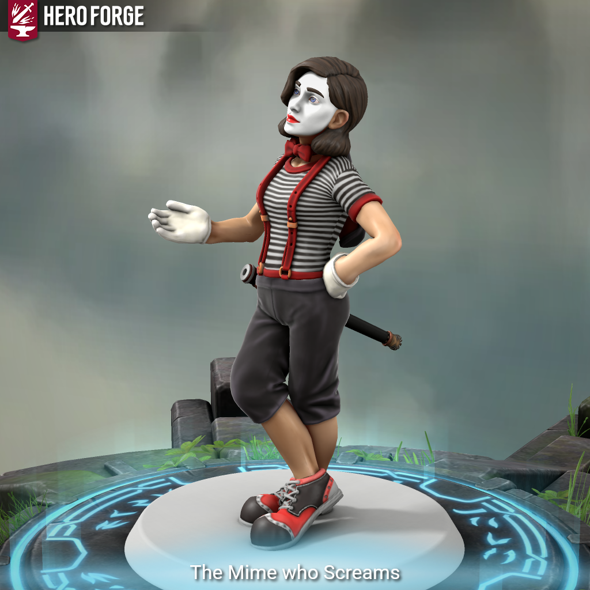

The Mime Who Screams - Is This Anything?

Meet The Mime Who Screams.
Race: Changeling
Bardic College: Eloquence
The Mime who Screams had a traumatic event that kept them silent for years. They’ve discovered that when in mortal peril, sounds do come out – abruptly and loudly. This changeling communicates entirely via exaggerated gestures and illusions, until they erupt in terrifying banshee-like screams when pushed too far.
They avoid speech entirely, but their “cutting words†are delivered telepathically or as disruptive flashes of emotion and image. The moment they speak is meant to be mechanically and narratively explosive. (Mechanically, the Mime cannot speak unless at 25% HP or lower, or under magical duress.)
The Mime falls back on illusory scripts, prestidigitation, and exaggerated physical gestures. Silent Image, Minor Illusion, and Unseen Servant help them mime props and scenes.
While in combat, Cutting Words can still be used silently: snapping fingers, wagging fingers, holding up illusion flashcards with biting sarcasm. The Mime can also inspire allies by miming exaggerated victory scenes – a spotlighted bow, a thumbs-up with sparkles.
Once per long rest: Break the Silence. A guttural scream delivered with Shatter, Dissonant Whispers, or a homebrewed effect that frightens nearby enemies, emporarily disables magical silence, and causes allies to gain temporary HP or advantage on next roll from shock/awe.
As a changeling, the Mime’s face morphs when using Unsettling Words. Their silence becomes weaponized — like a quiet psychological horror villain.
The Mime fights with an entirely-mimed rapier, with large theatrical movements that do actual damage. The Mime also has a shield spell that is the box inside which they get trapped sometimes. The Mime can also use their mimed bow-and-arrow to target enemies with Dissonant Whispers, Vicious Mockery, or just Magic Missiles.
Any spells cast by The Mime are acted-out in a way that relates to the spell itself. Calm Emotions, for example, would have The Mime pushing down invisible walls of emotion around them to contain fury.